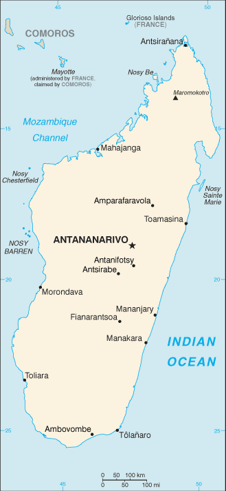
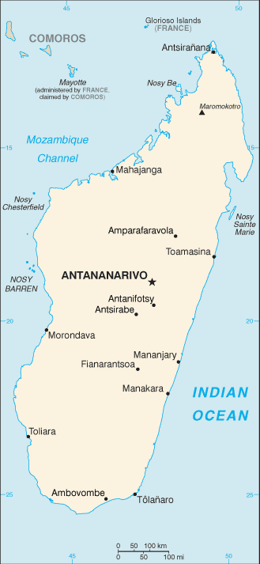

Africa :: MADAGASCAR
Introduction :: MADAGASCAR
-
Madagascar was one of the last major landmasses on earth to be colonized by humans. The earliest settlers from present-day Indonesia arrived between A.D. 350 and 550. The island attracted Arab and Persian traders as early as the 7th century, and migrants from Africa arrived around A.D. 1000. Madagascar was a pirate stronghold during the late 17th and early 18th centuries, and served as a slave trading center into the 19th century. From the 16th to the late 19th century, a native Merina Kingdom dominated much of Madagascar. The island was conquered by the French in 1896 who made it a colony; independence was regained in 1960. During 1992-93, free presidential and National Assembly elections were held ending 17 years of single-party rule. In 1997, in the second presidential race, Didier RATSIRAKA, the leader during the 1970s and 1980s, was returned to the presidency. The 2001 presidential election was contested between the followers of Didier RATSIRAKA and Marc RAVALOMANANA, nearly causing secession of half of the country. In April 2002, the High Constitutional Court announced RAVALOMANANA the winner. RAVALOMANANA won a second term in 2006 but, following protests in 2009, handed over power to the military, which then conferred the presidency on the mayor of Antananarivo, Andry RAJOELINA, in what amounted to a coup d'etat. Following a lengthy mediation process led by the Southern African Development Community, Madagascar held UN-supported presidential and parliamentary elections in 2013. Former de facto finance minister Hery RAJAONARIMAMPIANINA won a runoff election in December 2013 and was inaugurated in January 2014.
Geography :: MADAGASCAR
-
Southern Africa, island in the Indian Ocean, east of Mozambique20 00 S, 47 00 EAfricatotal: 587,041 sq kmland: 581,540 sq kmwater: 5,501 sq kmcountry comparison to the world: 48almost four times the size of Georgia; slightly less than twice the size of Arizona0 km4,828 kmterritorial sea: 12 nmcontiguous zone: 24 nmexclusive economic zone: 200 nmcontinental shelf: 200 nm or 100 nm from the 2,500-m isobathtropical along coast, temperate inland, arid in southnarrow coastal plain, high plateau and mountains in centermean elevation: 615 melevation extremes: lowest point: Indian Ocean 0 mhighest point: Maromokotro 2,876 mgraphite, chromite, coal, bauxite, rare earth elements, salt, quartz, tar sands, semiprecious stones, mica, fish, hydropoweragricultural land: 71.1%arable land 6%; permanent crops 1%; permanent pasture 64.1%forest: 21.5%other: 7.4% (2011 est.)10,860 sq km (2012)most of population lives on the eastern half of the island; significant clustering is found in the central highlands and eastern coastlineperiodic cyclones; drought; and locust infestationvolcanism: Madagascar's volcanoes have not erupted in historical timessoil erosion results from deforestation and overgrazing; desertification; surface water contaminated with raw sewage and other organic wastes; several endangered species of flora and fauna unique to the islandparty to: Biodiversity, Climate Change, Climate Change-Kyoto Protocol, Desertification, Endangered Species, Hazardous Wastes, Law of the Sea, Marine Life Conservation, Ozone Layer Protection, Ship Pollution, Wetlandssigned, but not ratified: none of the selected agreementsworld's fourth-largest island; strategic location along Mozambique Channel
People and Society :: MADAGASCAR
-
25,054,161 (July 2017 est.)country comparison to the world: 52noun: Malagasy (singular and plural)adjective: MalagasyMalayo-Indonesian (Merina and related Betsileo), Cotiers (mixed African, Malayo-Indonesian, and Arab ancestry - Betsimisaraka, Tsimihety, Antaisaka, Sakalava), French, Indian, Creole, ComoranFrench (official), Malagasy (official), EnglishChristian, indigenous religionist, MuslimMadagascar’s youthful population – just over 60% are under the age of 25 – and high total fertility rate of more than 4 children per women ensures that the Malagasy population will continue its rapid growth trajectory for the foreseeable future. The population is predominantly rural and poor; chronic malnutrition is prevalent, and large families are the norm. Many young Malagasy girls are withdrawn from school, marry early (often pressured to do so by their parents), and soon begin having children. Early childbearing, coupled with Madagascar’s widespread poverty and lack of access to skilled health care providers during delivery, increases the risk of death and serious health problems for young mothers and their babies.Child marriage perpetuates gender inequality and is prevalent among the poor, the uneducated, and rural households – as of 2013, of Malagasy women aged 20 to 24, more than 40% were married and more than a third had given birth by the age of 18. Although the legal age for marriage is 18, parental consent is often given for earlier marriages or the law is flouted, especially in rural areas that make up nearly 65% of the country. Forms of arranged marriage whereby young girls are married to older men in exchange for oxen or money are traditional. If a union does not work out, a girl can be placed in another marriage, but the dowry paid to her family diminishes with each unsuccessful marriage.Madagascar’s population consists of 18 main ethnic groups, all of whom speak the same Malagasy language. Most Malagasy are multi-ethnic, however, reflecting the island’s diversity of settlers and historical contacts (see Background). Madagascar’s legacy of hierarchical societies practicing domestic slavery (most notably the Merina Kingdom of the 16th to the 19th century) is evident today in persistent class tension, with some ethnic groups maintaining a caste system. Slave descendants are vulnerable to unequal access to education and jobs, despite Madagascar’s constitutional guarantee of free compulsory primary education and its being party to several international conventions on human rights. Historical distinctions also remain between central highlanders and coastal people.0-14 years: 39.87% (male 5,035,160/female 4,952,909)15-24 years: 20.34% (male 2,556,130/female 2,538,644)25-54 years: 32.12% (male 4,022,698/female 4,025,038)55-64 years: 4.38% (male 535,300/female 560,932)65 years and over: 3.3% (male 374,770/female 452,580) (2017 est.)total dependency ratio: 80.1youth dependency ratio: 75elderly dependency ratio: 5.1potential support ratio: 19.6 (2015 est.)total: 19.7 yearsmale: 19.5 yearsfemale: 19.9 years (2017 est.)country comparison to the world: 1982.5% (2017 est.)country comparison to the world: 2031.6 births/1,000 population (2017 est.)country comparison to the world: 336.5 deaths/1,000 population (2017 est.)country comparison to the world: 1460 migrant(s)/1,000 population (2017 est.)country comparison to the world: 88most of population lives on the eastern half of the island; significant clustering is found in the central highlands and eastern coastlineurban population: 36.4% of total population (2017)rate of urbanization: 4.47% annual rate of change (2015-20 est.)ANTANANARIVO (capital) 2.61 million (2015)at birth: 1.03 male(s)/female0-14 years: 1.02 male(s)/female15-24 years: 1.01 male(s)/female25-54 years: 1 male(s)/female55-64 years: 0.95 male(s)/female65 years and over: 0.83 male(s)/femaletotal population: 1 male(s)/female (2016 est.)19.5 yearsnote: median age at first birth among women 25-29 (2008/09 est.)353 deaths/100,000 live births (2015 est.)country comparison to the world: 34total: 41.2 deaths/1,000 live birthsmale: 45 deaths/1,000 live birthsfemale: 37.3 deaths/1,000 live births (2017 est.)country comparison to the world: 45total population: 66.3 yearsmale: 64.7 yearsfemale: 67.8 years (2017 est.)country comparison to the world: 1754.03 children born/woman (2017 est.)country comparison to the world: 3339.9% (2008/09)3% of GDP (2014)country comparison to the world: 1810.14 physicians/1,000 population (2012)0.2 beds/1,000 population (2010)improved:urban: 81.6% of populationrural: 35.3% of populationtotal: 51.5% of populationunimproved:urban: 18.4% of populationrural: 64.7% of populationtotal: 48.5% of population (2015 est.)improved:urban: 18% of populationrural: 8.7% of populationtotal: 12% of populationunimproved:urban: 82% of populationrural: 91.3% of populationtotal: 88% of population (2015 est.)0.2% (2016 est.)country comparison to the world: 9331,000 (2016 est.)country comparison to the world: 661,600 (2016 est.)country comparison to the world: 58degree of risk: very highfood or waterborne diseases: bacterial diarrhea, hepatitis A, and typhoid fevervectorborne diseases: malaria and dengue feverwater contact disease: schistosomiasisanimal contact disease: rabies (2016)5.3% (2016)country comparison to the world: 1792.1% of GDP (2013)country comparison to the world: 150definition: age 15 and over can read and writetotal population: 64.7%male: 66.7%female: 62.6% (2015 est.)total: 11 yearsmale: 11 yearsfemale: 10 years (2014)total: 2.6%male: 2.2%female: 3% (2012 est.)country comparison to the world: 133
Government :: MADAGASCAR
-
conventional long form: Republic of Madagascarconventional short form: Madagascarlocal long form: Republique de Madagascar/Repoblikan'i Madagasikaralocal short form: Madagascar/Madagasikaraformer: Malagasy Republicetymology: the name "Madageiscar" was first used by the 13th-century Venetian explorer Marco POLO, as a corrupted transliteration of Mogadishu, the Somali port with which POLO confused the islandsemi-presidential republicname: Antananarivogeographic coordinates: 18 55 S, 47 31 Etime difference: UTC+3 (8 hours ahead of Washington, DC, during Standard Time)6 provinces (faritany); Antananarivo, Antsiranana, Fianarantsoa, Mahajanga, Toamasina, Toliara26 June 1960 (from France)Independence Day, 26 June (1960)history: previous 1992; latest passed by referendum 17 November 2010, promulgated 11 December 2010amendments: proposed by the president of the republic in consultation with the cabinet or supported by a least two-thirds of both the Senate and National Assembly membership; passage requires at least three-fourths approval of both the Senate and National Assembly and approval in a referendum; constitutional articles including the form and powers of government, the sovereignty of the state, and the autonomy of Madagascar’s collectivities cannot be amended (2017)civil law system based on the old French civil code and customary law in matters of marriage, family, and obligationaccepts compulsory ICJ jurisdiction with reservations; accepts ICCt jurisdictioncitizenship by birth: nocitizenship by descent only: the father must be a citizen of Madagascar; in the case of a child born out of wedlock, the mother must be a citizendual citizenship recognized: noresidency requirement for naturalization: unknown18 years of age; universalchief of state: President Hery Martial RAJAONARIMAMPIANINA Rakotoarimana (since 25 January 2014)head of government: Prime Minister Olivier Mahafaly SOLONANDRASANA (since 13 April 2016); Prime Minister Jean RAVELONARIVO (since 17 January 2015) resigned 8 April 2016cabinet: Council of Ministers appointed by the prime ministerelections/appointments: president directly elected by absolute majority popular vote in 2 rounds if needed for a 5-year term (eligible for a second term); election last held on 25 October and 20 December 2013 (next to be held in 2018); prime minister nominated by the National Assembly, appointed by the presidentelection results: Hery Martial RAJAONARIMAMPIANINA elected president in second round; percent of vote - Hery Martial RAJAONARIMAMPIANINA (HVM) 53.5%, Jean Louis ROBINSON (AVANA) 46.5%note: on 17 March 2009, democratically elected President Marc RAVALOMANANA stepped down, handing the government over to the military, which in turn conferred the presidency on opposition leader and Antananarivo mayor Andry RAJOELINA; a power-sharing agreement established a 15-month transition period to conclude with a general election in 2010, which failed to occur; a subsequent agreement aimed for an early 2013 election - the first round was held on 25 October 2013 and the second on 20 December 2013description: bicameral; consists of the Senate or Antenimieran-Doholona (dissolved following the 2009 coup and reestablished in December 2015) (63 seats; 42 members indirectly elected by an electoral college of municipal, communal, regional, and provincial leaders and 21 appointed by the president of the republic; members serve 6-year terms)and the National Assembly or Antenimierampirenena (151 seats; 87 members directly elected in single-seat constituencies by simple majority vote and 64 directly elected in multi-seat constituencies by closed-list proportional representation vote; members serve 4-year terms)elections: National Assembly - last held on 20 December 2013 (next to be held in 2017); Senate - last held 29 December 2015 (next to be held in 2021)election results: National Assembly - percent of vote by party - MAPAR 17.3%, MR 10.8%, VPM MMM 8.2%, PHI 3.8%, AMHM 3.5%, LEADER-Fanilo 2.8%, FFF 1.6%, AIM 1.0%, SFN 0.3%, independent and other 50.6%; seats by party - MAPAR 49, MR 20, VPM MMM 13, PHI 5, AMHM 2, LEADER-Fanilo 5, FFF 2, AIM 2, SFN 2, other 22, independent 25, seats with delayed elections 4; Senate - percent of vote by party - NA; seats by party - TIM 3, MAPAR 2, LEADER-Fanilo 1, independent 2; appointed by the President 21highest court(s): Supreme Court or Cour Supreme (consists of 11 members; addresses judicial administration issues only); High Constitutional Court or Haute Cour Constitutionnelle (consists of 9 members); note - the judiciary includes a High Court of Justice responsible for adjudicating crimes and misdemeanors by government officials including the presidentjudge selection and term of office: Supreme Court heads elected by the president and judiciary officials to serve single-renewable, 3-year terms; High Constitutional Court members appointed - 3 each by the president, by both legislative bodies, and by the Council of Magistrates; members serve single, 6-year termssubordinate courts: Courts of Appeal; provincial and city tribunalsAVANA Party [Jean-Louis ROBINSON]Economic Liberalism and Democratic Action for National Recovery/LEADER-Fanilo [Manasse ESOAVELOMANDROSO]Green Party/Parti Vert or AMHM [Sarah Georget RABEHARISOA]I Love Madagascar (Tiako I Madagaskara) or TIM [Marc RAVALOMANANA]National Unity, Freedom, and Development or FFF [Benjamin RADAVIDSON Andriamparany]New Forces for Madagascar (Hery Vaovao ho an'i Madagaskara) or HVM [Hery RAJAONARIMAMPIANINA]Parti Hiaraka Isika or PHI [Albert Camille VITAL]Pillar of Madagascar or AIM [Andry RAKOTOVAO]Ravalomanana Movement or MRSambo Fiaran'i Noe or SFNUnion Party or Tambatra [Pety RAKOTONIAINA]Vondrona Politika Miara dia Malagasy Miara Miainga or VPM MMM [Milavonjy ANDRIASY]With the President Andry RAJOELIN (Miaraka Amin'ny Prezida Andry Rajoelina) or MAPAR [Andry RAJOELINA]Committee for the Defense of Truth and Justice or KMMRCommittee for National Reconciliation or CRNNational Council of Christian Churches or FFKMACP, AfDB, AU, CD, COMESA, EITI (candidate country), FAO, G-77, IAEA, IBRD, ICAO, ICC (NGOs), ICCt, ICRM, IDA, IFAD, IFC, IFRCS, ILO, IMF, IMO, InOC, Interpol, IOC, IOM, IPU, ISO (correspondent), ITSO, ITU, ITUC (NGOs), MIGA, NAM, OIF, OPCW, PCA, SADC, UN, UNCTAD, UNESCO, UNHCR, UNIDO, UNWTO, UPU, WCO, WFTU (NGOs), WHO, WIPO, WMO, WTOchief of mission: Ambassador (vacant); Charge d'Affaires Velotiana Rakotoanosy RAOBELINA (since 20 June 2011)chancery: 2374 Massachusetts Avenue NW, Washington, DC 20008telephone: [1] (202) 265-5525FAX: [1] (202) 265-3034consulate(s) general: New Yorkchief of mission: Ambassador Robert T. YAMATE (since 14 January 2015); note - also accredited to Comorosembassy: Lot 207A, Point Liberty, Andranoro, Antehiroka, 105 Antananarivomailing address: B.P. 620, Antsahavola, Antananarivotelephone: [261] 20 23 480 00FAX: [261] 20 23 480 35 or [261] 33 44 328 17two equal horizontal bands of red (top) and green with a vertical white band of the same width on hoist side; by tradition, red stands for sovereignty, green for hope, white for puritytraveller's palm, zebu; national colors: red, green, whitename: "Ry Tanindraza nay malala o" (Oh, Our Beloved Fatherland)lyrics/music: Pasteur RAHAJASON/Norbert RAHARISOAnote: adopted 1959
Economy :: MADAGASCAR
-
Madagascar is a free market economy with many untapped natural resources, but no capital markets, a weak judicial system, poorly enforced contracts, and rampant government corruption. The economy faces long-term challenges to improve education, healthcare, and the environment. Agriculture, including fishing and forestry, is a mainstay of the economy, accounting for more than one-fourth of GDP and employing roughly 80% of the population. Deforestation and erosion, aggravated by bushfire and the use of firewood as the primary source of fuel, are serious concerns.After discarding socialist economic policies in the mid-1990s, Madagascar followed a World Bank- and IMF-led policy of privatization and liberalization until the onset of a political crisis, which lasted from 2009 to 2013. The free market strategy had placed the country on a slow and steady growth path from an extremely low starting point. Exports of apparel boomed after gaining duty-free access to the US in 2000; however, Madagascar's failure to comply with the requirements of the African Growth and Opportunity Act (AGOA) led to the termination of the country's duty-free access in January 2010, a sharp fall in textile production, and a loss of more than 100,000 jobs.Madagascar regained AGOA access in January 2015 following the democratic election of a new president the previous year. In November 2015, the IMF approved a Rapid Credit Facility to Madagascar worth about $42.1 million to help the government meet its balance of payments needs. The IMF judged that Madagascar had demonstrated satisfactory performance on macroeconomic performance and structural reforms, and in mid-2016 approved another $304 million extended credit facility for the country. GDP growth is expected around 2.8% per year in 2016-17, due to underperformance in agriculture.$37.5 billion (2016 est.)$35.54 billion (2015 est.)$34.1 billion (2014 est.)note: data are in 2016 dollarscountry comparison to the world: 118$10 billion (2016 est.)4.2% (2016 est.)3.1% (2015 est.)3.3% (2014 est.)country comparison to the world: 56$1,500 (2016 est.)$1,500 (2015 est.)$1,500 (2014 est.)note: data are in 2016 dollarscountry comparison to the world: 21916% of GDP (2016 est.)11.2% of GDP (2015 est.)15.3% of GDP (2014 est.)country comparison to the world: 132household consumption: 74.9%government consumption: 12.1%investment in fixed capital: 16.5%investment in inventories: 0%exports of goods and services: 32.5%imports of goods and services: -36% (2016 est.)agriculture: 24%industry: 15.7%services: 60.2% (2016 est.)coffee, vanilla, sugarcane, cloves, cocoa, rice, cassava (manioc, tapioca), beans, bananas, peanuts; livestock productsmeat processing, seafood, soap, beer, leather, sugar, textiles, glassware, cement, automobile assembly plant, paper, petroleum, tourism, mining4.6% (2016 est.)country comparison to the world: 5012.61 million (2016 est.)country comparison to the world: 442.1% (2016 est.)country comparison to the world: 1670.7% (2012 est.)lowest 10%: 2.2%highest 10%: 34.7% (2010 est.)41 (2012)46.9 (2001)country comparison to the world: 55revenues: $1.196 billionexpenditures: $1.604 billion (2016 est.)12.3% of GDP (2016 est.)country comparison to the world: 206-4.2% of GDP (2016 est.)country comparison to the world: 14342.3% of GDP (2016 est.)35.5% of GDP (2015 est.)country comparison to the world: 127calendar year6.7% (2016 est.)7.4% (2015 est.)country comparison to the world: 1878.3% (31 December 2016)8.7% (31 December 2015)country comparison to the world: 3862% (31 December 2016 est.)60% (31 December 2015 est.)country comparison to the world: 1$849.1 million (31 December 2016 est.)$1.375 billion (31 December 2015 est.)country comparison to the world: 157$1.793 billion (31 December 2016 est.)$2.243 billion (31 December 2015 est.)country comparison to the world: 157$1.746 billion (31 December 2016 est.)$1.645 billion (31 December 2015 est.)country comparison to the world: 151$NA$75 million (2016 est.)$-67.4 million (2015 est.)country comparison to the world: 83$2.196 billion (2016 est.)$2.185 billion (2015 est.)country comparison to the world: 136coffee, vanilla, shellfish, sugar, cotton cloth, clothing, chromite, petroleum productsFrance 23.5%, US 12.8%, Germany 8.3%, China 6.3%, Japan 5%, Netherlands 4.3%, South Korea 4.2% (2016)$2.857 billion (2016 est.)$2.688 billion (2015 est.)country comparison to the world: 144capital goods, petroleum, consumer goods, foodChina 21.2%, France 6.9%, India 6.5%, UAE 5.6%, Saudi Arabia 5%, South Africa 5% (2016)$1.184 billion (31 December 2016 est.)$832 million (31 December 2015 est.)country comparison to the world: 122$3.425 billion (31 December 2016 est.)$2.985 billion (31 December 2015 est.)country comparison to the world: 140$6.461 billion (2014 est.)$6.462 billion (2013 est.)country comparison to the world: 100$NAMalagasy ariary (MGA) per US dollar -3,176.5 (2016 est.)3,176.5 (2015 est.)2,933.5 (2014 est.)2,414.8 (2013 est.)2,195 (2012 est.)
Energy :: MADAGASCAR
-
population without electricity: 19,500,000electrification - total population: 15%electrification - urban areas: 37%electrification - rural areas: 4% (2013)1.508 billion kWh (2015 est.)country comparison to the world: 1461.402 billion kWh (2015 est.)country comparison to the world: 1500 kWh (2016 est.)country comparison to the world: 1630 kWh (2016 est.)country comparison to the world: 170m 668,200 kW (2015 est.)country comparison to the world: 13873.9% of total installed capacity (2015 est.)country comparison to the world: 970% of total installed capacity (2015 est.)country comparison to the world: 13324.5% of total installed capacity (2015 est.)country comparison to the world: 801.8% of total installed capacity (2015 est.)country comparison to the world: 1250 bbl/day (2016 est.)country comparison to the world: 1630 bbl/day (2014 est.)country comparison to the world: 1560 bbl/day (2014 est.)country comparison to the world: 1540 bbl (1 January 2017 es)country comparison to the world: 1600 bbl/day (2014 est.)country comparison to the world: 16715,000 bbl/day (2015 est.)country comparison to the world: 1510 bbl/day (2014 est.)country comparison to the world: 17415,230 bbl/day (2014 est.)country comparison to the world: 1320 cu m (2013 est.)country comparison to the world: 1620 cu m (2013 est.)country comparison to the world: 2030 cu m (2013 est.)country comparison to the world: 1410 cu m (2013 est.)country comparison to the world: 1502.01 billion cu m (1 January 2012 es)country comparison to the world: 1013 million Mt (2013 est.)country comparison to the world: 143
Communications :: MADAGASCAR
-
total subscriptions: 148,585subscriptions per 100 inhabitants: 1 (July 2016 est.)country comparison to the world: 121total: 10,411,721subscriptions per 100 inhabitants: 43 (July 2016 est.)country comparison to the world: 91general assessment: system is above average for the region; competition among the three mobile service providers has spurred recent growth in the mobile marketdomestic: combined fixed-line and mobile-cellular teledensity about 45 per 100 personsinternational: country code - 261; landing point for the EASSy, SEACOM, and LION fiber-optic submarine cable systems; satellite earth stations - 2 (1 Intelsat - Indian Ocean, 1 Intersputnik - Atlantic Ocean region) (2016)state-owned Radio Nationale Malagasy (RNM) and Television Malagasy (TVM) have an extensive national network reach; privately owned radio and TV broadcasters in cities and major towns; state-run radio dominates in rural areas; relays of 2 international broadcasters are available in Antananarivo (2007).mgtotal: 1,151,563percent of population: 4.7% (July 2016 est.)country comparison to the world: 31
Transportation :: MADAGASCAR
-
number of registered air carriers: 3inventory of registered aircraft operated by air carriers: 11annual passenger traffic on registered air carriers: 546,946annual freight traffic on registered air carriers: 30,512,607 mt-km (2015)5R (2016)83 (2013)country comparison to the world: 65total: 26over 3,047 m: 12,438 to 3,047 m: 21,524 to 2,437 m: 6914 to 1,523 m: 16under 914 m: 1 (2017)total: 571,524 to 2,437 m: 1914 to 1,523 m: 38under 914 m: 18 (2013)total: 836 kmnarrow gauge: 836 km 1.000-m gauge (2014)country comparison to the world: 95total: 37,476 kmpaved: 6,103 kmunpaved: 31,373 km (2010)country comparison to the world: 92600 km (432 km navigable) (2011)country comparison to the world: 79total: 1by type: cargo 1registered in other countries: 1 (unknown 1) (2010)country comparison to the world: 153major seaport(s): Antsiranana (Diego Suarez), Mahajanga, Toamasina, Toliara (Tulear)
Military and Security :: MADAGASCAR
-
0.59% of GDP (2016)0.6% of GDP (2015)0.65% of GDP (2014)0.68% of GDP (2013)0.69% of GDP (2012)country comparison to the world: 119People's Armed Forces: Intervention Force, Development Force, Navy, Air Force (2014)18-25 years of age for male-only mix of voluntary and conscripted military service; women are not conscripted but can volunteer for all services except the Navy; service obligation is 18 months for military or equivalent civil service; 20-30 years of age for National Gendarmerie recruits and 35 years of age for those with military experience (2017)
Transnational Issues :: MADAGASCAR
-
claims Bassas da India, Europa Island, Glorioso Islands, and Juan de Nova Island (all administered by France); the vegetated drying cays of Banc du Geyser, which were claimed by Madagascar in 1976, also fall within the EEZ claims of the Comoros and France (Glorioso Islands, part of the French Southern and Antarctic Lands)IDPs: 246,842 (cyclone in 2017) (2017)illicit producer of cannabis (cultivated and wild varieties) used mostly for domestic consumption; transshipment point for heroin